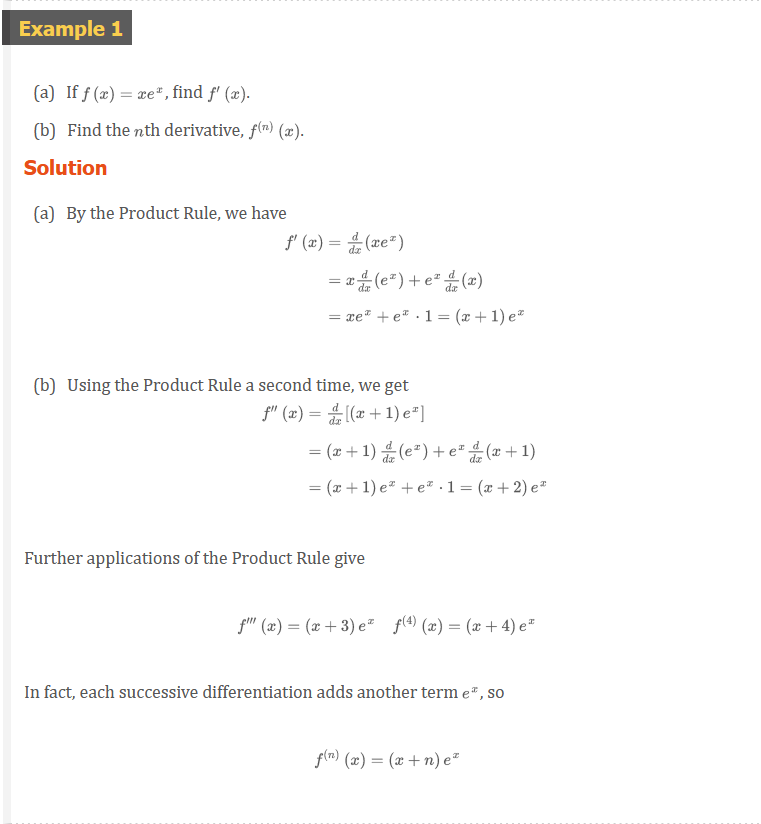
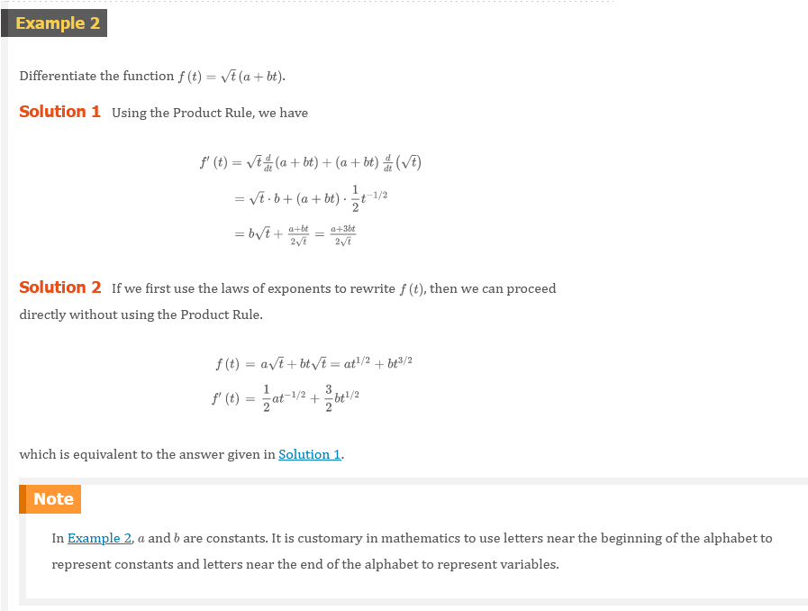
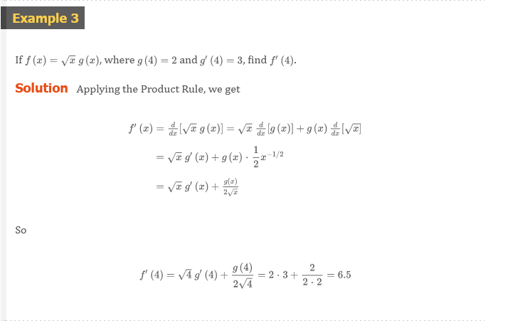
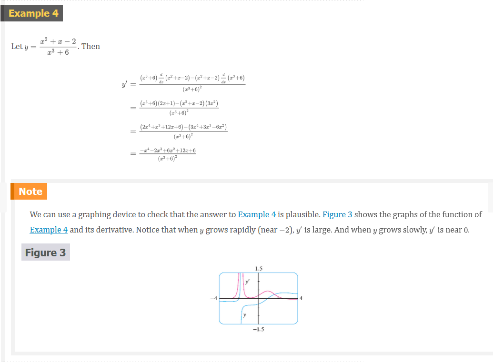
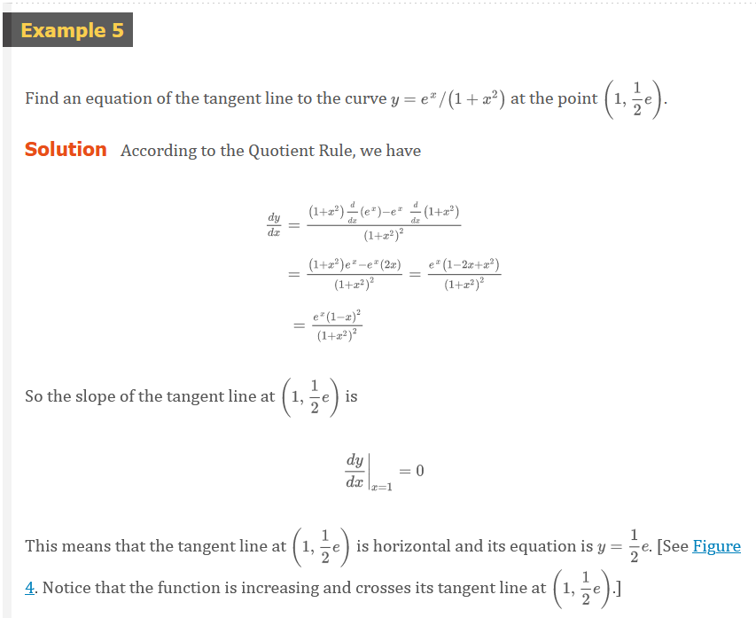
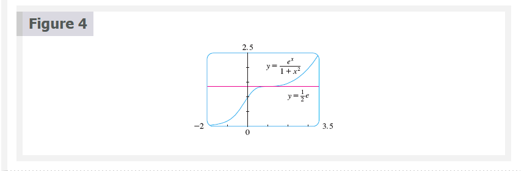

Chapter 3.2: The Product and Quotient Rules
The Product Rule
Before stating the Product Rule, let’s see how we might discover it. We start by assuming that \(u = f(x)\) and \(v = g(x)\) are both positive differentiable functions. Then we can interpret the product \(uv\) as an area of a rectangle (see Figure 1). If changes by an amount \(\Delta{x}\), then the corresponding changes in \(u\) and \(v\) are
\[ \Delta{u} = f(x + \Delta{x}) - f(x) \;\;\; \Delta{v} = g(x + \Delta{x}) - g(x) \]
and the new value of the product, \((u + \Delta{u})(v + \Delta{v}\), can be interpreted as the area of the large rectangle in Figure 1 (provided that \(\Delta{u}\) and \(\Delta{v}\) happen to be positive).
The change in the area of the rectangle is
1 Definition
\[ \begin{aligned} \Delta{(uv)} & = (u + \Delta{u})(v + \Delta{v}) - uv = u\Delta{v} + v\Delta{u} + \Delta{u}\Delta{v} \\ & = \text{The sum of the three shaded areas} \end{aligned} \]
If we divide by \(\Delta{x}\), we get
\[ \frac{\Delta{(uv)}}{\Delta{x}} = u\frac{\Delta{v}}{\Delta{x}} + v\frac{\Delta{u}}{\Delta{x}} + \Delta{u}\frac{\Delta{v}}{\Delta{x}} \]
If we not let \(\Delta{x} \to 0\), we get the derivative of \(uv\):
\[ \begin{aligned} \frac{d}{dx}(uv) & = \lim_{x \to 0}\frac{\Delta{(uv)}}{\Delta{x}} = \lim_{x \to 0} \Bigl( u\frac{\Delta{v}}{\Delta{x}} + v\frac{\Delta{u}}{\Delta{x}} + \Delta{u}\frac{\Delta{v}}{\Delta{x}} \Bigr) \\ & = u\lim_{\Delta{x} \to 0}\frac{\Delta{v}}{\Delta{x}} + v\lim_{\Delta{x} \to 0}\frac{\Delta{u}}{\Delta{x}} + \Bigl( \lim_{\Delta{x} \to 0}\Delta{u} \Bigr)\Bigl( \lim_{\Delta{x} \to 0}\frac{\Delta{v}}{\Delta{x}} \Bigr) \\ & = u\frac{dv}{dx} + v\frac{du}{dx} + 0 \cdot \frac{dv}{dx} \\ \frac{d}{dx}(uv) & = u\frac{dv}{dx} + v\frac{du}{dx} \end{aligned} \]
NOTE
Recall that in Leibniz notation the definition of a derivative can be written as
\[ \frac{dy}{dx} = \lim_{x \to 0}\frac{\Delta{y}}{\Delta{x}} \]
(Notice that \(\Delta{u} \to 0\) as \(\Delta{x} \to 0\) since \(f\) is differentiable and therefore continuous).
The Product Rule
If \(f\) and \(g\) are both differentiable, then
\[ \frac{d}{dx}[f(x)g(x)] = f(x)\frac{d}{dx}[g(x)] + g(x)\frac{d}{dx}[f(x)] \]
NOTE
In prime notation:
\[ (fg)^{\prime} = fg^{\prime} + gf^{\prime} \]
  
Quotient Rule
We find a rule for differentiating the quotient of two differentiable functions \(u = f(x)\) and \(v = g(x)\) in much the same way that we found the Product Rule. If \(x\), \(u\), and \(v\) change by amounts \(\Delta{x}\), \(\Delta{u}\), and \(\Delta{v}\), then the corresponding change in the quotient \(u/v\) is
\[ \Delta{\left ( \frac{u}{v} \right )} = \frac{u + \Delta{u}}{v + \Delta{v}} - \frac{u}{v} = \frac{(u + \Delta{u})v - u(v + \Delta{v})}{v(v + \Delta{v})} \]
so
\[ \frac{d}{dx}\left ( \frac{u}{v} \right ) = \lim_{x \to 0}\frac{\Delta{(u/v)}}{\Delta{x}} =\lim_{x \to 0}\frac{v\dfrac{\Delta{u}}{\Delta{x}} - u\dfrac{\Delta{v}}{\Delta{x}}}{v(v + \Delta{v})} \]
As \(\Delta{x} \to 0\), \(\Delta{v} \to 0\) also, because \(v = g(x)\) is differentiable and therefore continuous. Thus, using the Limit Laws, we get
\[ \frac{d}{dx}\left ( \frac{u}{v} \right ) = \frac{v\lim_{\Delta{x} \to 0}\dfrac{\Delta{u}}{\Delta{x}} - u\lim_{\Delta{x} \to 0}\dfrac{\Delta{v}}{\Delta{x}}}{v\lim_{\Delta{x} \to 0}(v + \Delta{v})} = \frac{v\dfrac{du}{dx} - u\dfrac{dv}{dx}}{v^{2}} \]
The Quotient Rule
If \(f\) and \(g\) are differentiable, then
\[ \frac{d}{dx}\left [ \frac{f(x)}{g(x)} \right ] = \frac{g(x)\dfrac{d}{dx}[f(x)] - f(x)\dfrac{d}{dx}[g(x)]}{[g(x)]^{2}} \]
NOTE
In prime notation:
\[ \left ( \frac{f}{g} \right )^{\prime} = \frac{gf^{\prime} - fg^{\prime}}{g^{2}} \]
  
NOTE
Don’t use the Quotation Rule every time you see a quotient. Sometimes it’s easier to rewrite a quotient first to put it in a form that is simpler for the purpose of differentiation. For instance, although it is possible to differentiate the function
\[ F(x) = \frac{3x^{2} + 2\sqrt{x}}{x} \]
using the Quotient Rule, it is much easier to perform the division first and write the function as
\[ F(x) = 3x + 2x^{-1/2} \]
before differentiating.
We summarize the differentiation formulas we have learned so far as follows.
Video Lectures
- 🎬 Derivatives of \(\sin{x}\) and \(\cos{x}\)
- 🎬 Worked example: Derivatives of \(\sin{x}\) and \(\cos(x)\)
- 🎬 Derivative of \(e^{x}\)
- 🎬 Derivative of \(ln(x)\)
- 🎬 Product rule
- 🎬 Differentiating products
- 🌎 Product rule review
- 🎬 Quotient rule
- 🎬 Differentiating rational functions
- 🌎 Quotient rule review
Resources
- 🎬 Derivatives of \(\sin{x}\) and \(\cos{x}\)
- 🎬 Worked example: Derivatives of \(\sin{x}\) and \(\cos(x)\)
- 🎬 Derivative of \(e^{x}\)
- 🎬 Derivative of \(ln(x)\)
- 🎬 Product rule
- 🎬 Differentiating products
- 🌎 Product rule review
- 🎬 Quotient rule
- 🎬 Differentiating rational functions
- 🌎 Quotient rule review
Textbook